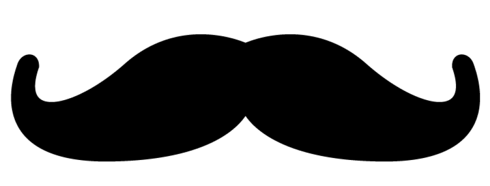
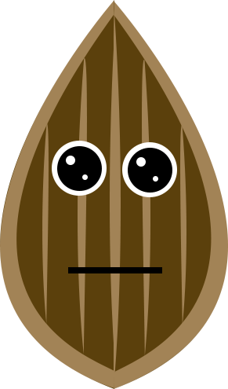

<ion-header>
  <ion-toolbar class="main-toolbar">
    <ion-title start>Green<strong>Grow</strong></ion-title>
    <ion-buttons end>
      <button ion-button icon-only color="light">
        <ion-icon ios="ios-return-left-outlinee" md="ios-return-left-outline"></ion-icon>
      </button>
    </ion-buttons>
  </ion-toolbar>
</ion-header>
<ion-content id="plant-container">
  <h1>Acerola</h1>
  <ion-icon class="custom-glasses"  ios="md-glasses" md="md-glasses"></ion-icon>
  
  
  <div class="fixed-content-top">

    <button class="status-button water" ion-button color="light" icon-only>
      <ion-icon ios="md-settings" md="md-settings"></ion-icon>
    </button>

  </div>
  <div class="fixed-content-bottom">
    <ion-row>
      <ion-col>
        <button class="status-button water" ion-button color="light" icon-only>
          <ion-icon ios="ios-rainy-outline" md="ios-rainy-outline"></ion-icon>
        </button>
      </ion-col>

      <ion-col>
        <button class="status-button water" ion-button color="light" icon-only>
          <ion-icon ios="ios-sunny-outline" md="ios-sunny-outline"></ion-icon>
        </button>
      </ion-col>

      <ion-col>
        <button class="status-button water" ion-button color="light" icon-only>
          <ion-icon ios="ios-game-controller-b-outline" md="ios-game-controller-b-outline"></ion-icon>
        </button>
      </ion-col>

      <ion-col>
        <button class="status-button water" ion-button color="light" icon-only>
          <ion-icon ios="ios-cart-outline" md="ios-cart-outline"></ion-icon>
        </button>
      </ion-col>
    </ion-row>
  </div>
</ion-content>